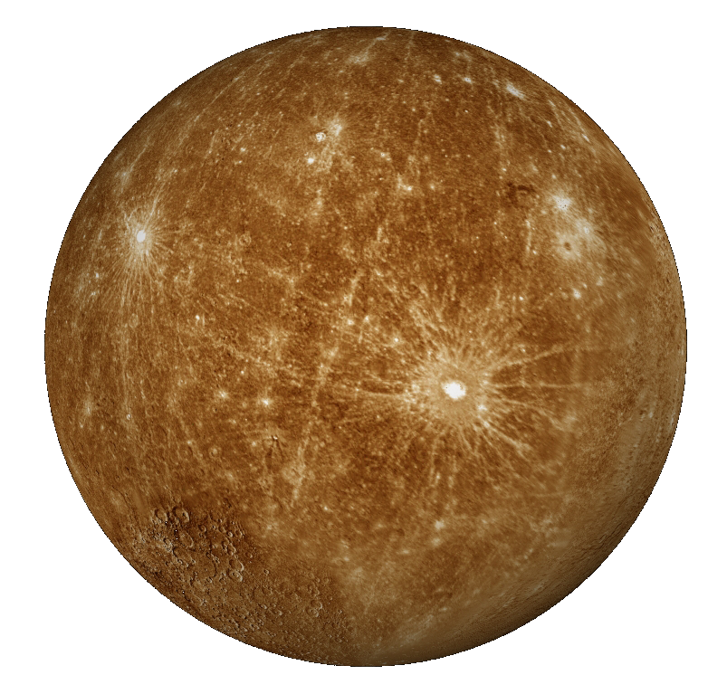
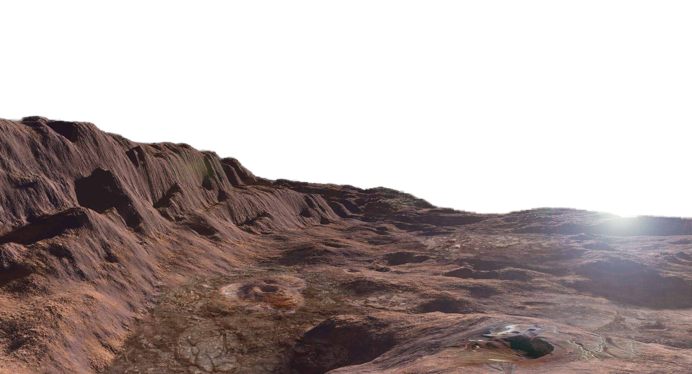
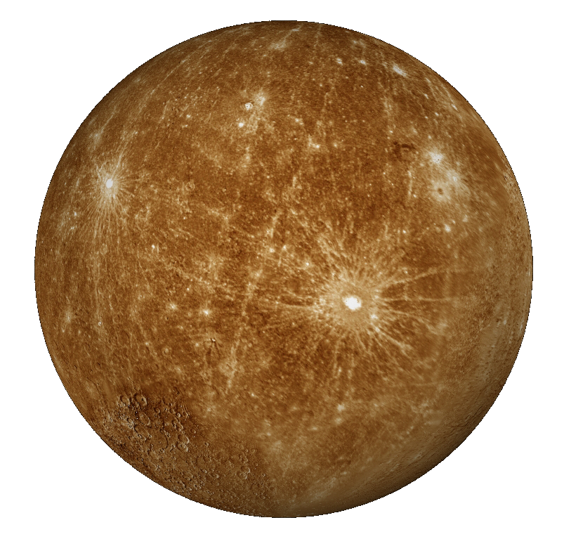
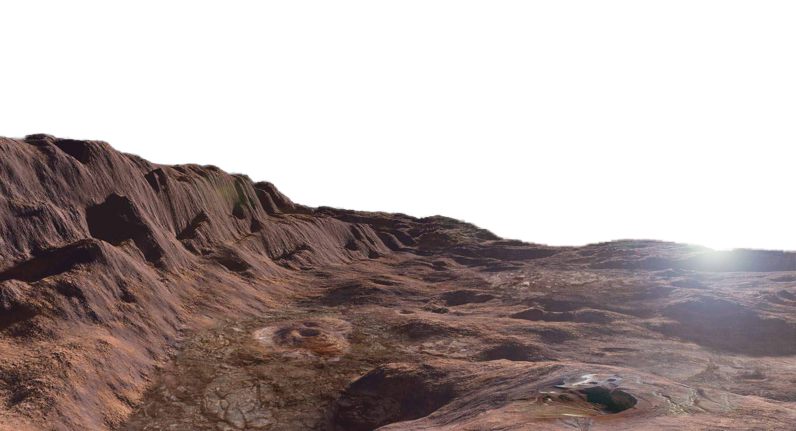

Mercury Planet
This is Mercury, the closest planet to the sun.
It's quite the planet, the sun would appear about 3 times larger
than what we see on earth.The temperatures on this planet can range between
800 degrees fahrenheit to -300 degrees. This extreme change in temperature
occurs because the planet has little to no atmosphere, so it cannot
retain much of the heat from the sun. Because of this, the side of
the planet facing the sun receives all the heat from the sun while the
side facing away from the sun loses all the heat.
Interestingly enough, it is not the hottest planet in our solar system. This planet does not have any moons orbiting it. Also, the time on mercury is greatly different from that of earths, a year on mercury would last up to 88 earth days. Mercury is also the second densest planet in our solar system, second only to earth. This planet also suffers greatly from the solar winds coming from the sun. It is believed that it may be impossible for this planet to host life
Interestingly enough, it is not the hottest planet in our solar system. This planet does not have any moons orbiting it. Also, the time on mercury is greatly different from that of earths, a year on mercury would last up to 88 earth days. Mercury is also the second densest planet in our solar system, second only to earth. This planet also suffers greatly from the solar winds coming from the sun. It is believed that it may be impossible for this planet to host life
The name Mercury comes from one of the
roman messenger gods Mercurius. This planet has a very strange orbit around the sun,
there are certain points where its closer to the sun and other points where is
farther away from the sun. When it gets close to the sun during its orbit, its
distance to the sun is around 20 million miles. When it gets its farthest point
from the sun, Mercury is about 45 million miles away. It was once believed that
Mercury was tidal locked, meaning that one side of the planet was always
facing the sun. However, after recent studies, it was concluded that mercury
was very slowly rotating.
Scientists now believe that mercury has a molten core.
This was the conclusion that they made after sending a satellite that they nicknamed Mariner
10 to the planet.This satellite made close observations such as discovering that Mercury had
a very weak magnetic field. It is believed that magnetic fields are associated with molten cores
in planets
Citation: National Aeronautics And Space Administration. "Planet Mercury Has Molten Core, NASA Researchers Find." ScienceDaily. ScienceDaily, 3 May 2007. Science Daily
Citation: National Aeronautics And Space Administration. "Planet Mercury Has Molten Core, NASA Researchers Find." ScienceDaily. ScienceDaily, 3 May 2007. Science Daily

Mercury's Core
 


